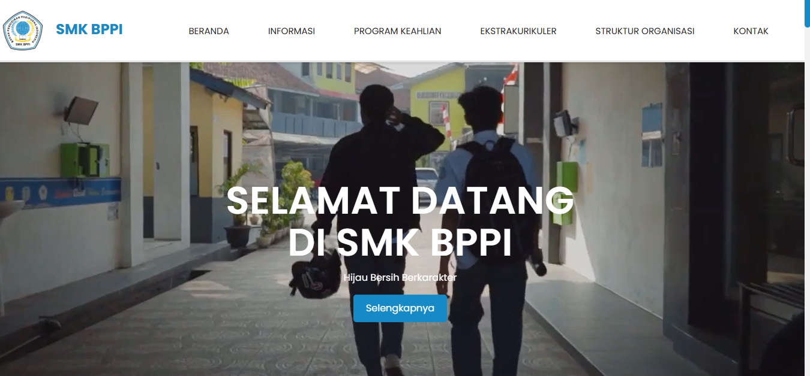

Portal Profil Sekolah
QA Role
Website SMK BPPI Baleendah
Kunjungi LivePortal resmi SMK BPPI Baleendah sebagai pusat berita, profil jurusan, agenda kegiatan akademik, dan media komunikasi publik bagi siswa, guru, orang tua, serta masyarakat luas.
Fokus Pengujian (QA Scope):
- Cross-browser & device testing
- Validasi link & navigasi menu
- Uji kecepatan muat & aset gambar
- Laporan temuan & retesting
HTML5
CSS3
JavaScript
PHP/Laravel
smk.sekolahbppi.sch.id